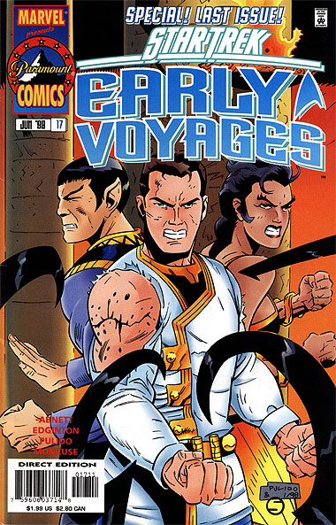
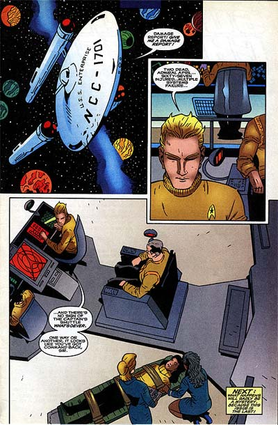

|


|
Gnese
| Episdios I Reflexes
| Palavras do autor | Palavras
do artista Star Trek
Early Voyages, n 17 junho de 1998  Histria: Dan Abnett e Ian Edginton Material produzido por Salvador Nogueira para o Trek Brasilis
Data Estelar: 390.5 Sinopse: Pike e os outros esto presos, sendo atacados pelos Temazi, juntamente com os Klingons liderados por Kaaj. Somente quando Klingons e federados resolvem trabalhar juntos que ambos conseguem escapar da massa enfurecida. Depois de fugirem, Kaaj quer matar Pike, acusando o capito da Enterprise de t-lo levado desgraa no Imprio Klingon, depois da humilhante derrota em Pharos. A Klingon Virka, entretanto, convence seu capito de que a hora da vingana no agora --todos precisam trabalhar juntos se querem sobreviver. Enquanto isso, um habitante local se prepara para a ofensiva final contra os aliengenas invasores. Ele liberta o Thanatos, a poderosa mquina de matar deixada por uma raa ancestral e ambicionada pelos Klingons, e ordena que ele persiga Pike, Kaaj e os demais. Em rbita, a Enterprise encontra duas naves Klingons. Questionada pelos aliengenas, a Nmero Um, supervisionada pelo almirante April, diz aos Klingons que a Federao est l apenas para estudar os Temazi. O capito Klingon, por outro lado, dispensa a falsidade e diz que est l para evitar que o Thanatos caia em outras mos que no as dos Klingons. Ele afirma que ir destruir toda a superfcie do planeta. April recomenda Nmero Um que se prepare para atacar os Klingons, mas ela se recusa, dizendo que est l para manter a paz, no iniciar uma guerra. Sua poltica, entretanto, logo se mostra falha, pois os Klingons no hesitam em atacar a Enterprise. Na superfcie do planeta, o Thanatos inicia sua perseguio a Pike, Kaaj e os demais. O Klingon, num acesso de bravura, decide ficar para trs e destruir a mquina. custa de sua prpria vida, ele tem sucesso, mas outras delas esto ainda em funcionamento. O grupo de Pike entretanto ganha tempo suficiente para partir em uma nave auxiliar Klingon. Chegando rbita do planeta, eles so perseguidos por um Thanatos. April ordena que a Enterprise destrua o mecanismo, mas a onda de choque resultante destri uma das naves Klingons e atira a nave auxiliar com Pike e os outros para fora de controle. Um dos destroos da nave Klingon atinge a Enterprise. Com o impacto, a Nmero Um cai no cho e bate a cabea, ficando inconsciente. April ento assume o comando da Enterprise, com ms notcias: no h mais sinal da nave auxiliar Klingon que transportava Pike, Spock e Boyce.  Comentrios Com esse cliff-hanger interrompido termina a saga de Early Voyages. E a ltima histria publicada mantm a qualidade excepcional das edies anteriores. A nica crtica que se faz a esse ltimo episdio a natureza mundana do tal Thanatos. Na primeira parte da histria, tudo levava a crer que essa tal mquina deixada por antigos aliengenas para os Temazi tinha poderes alm da imaginao. Mas quando, agora, descobrimos que Kaaj, sozinho, pode destruir um dos bichos, e a Enterprise, do espao, d conta fcil de outro deles, toda a noo de que federados e Klingons poderiam estar disputando a posse do equipamento perde o sentido. Em compensao, a histria oferece uma qualidade sem precedentes no desenvolvimento dos personagens. O almirante Robert April aparece como um elemento extremamente bem-acabado, no s extraindo o melhor da Nmero Um e da tenente Mohindas, at ento praticamente esquecida na srie, como desenvolvendo uma vida prpria. April um personagem fascinante, e seu estilo analtico e antiquado refora enormemente a sensao de nostalgia da srie. At seu sexismo declarado ajuda a transportar o leitor para o que seria um seriado de Jornada refletindo a dcada de 1950. No planeta, temos finalmente mais informao sobre Kaaj e sua histria pregressa no Imprio Klingon. uma pena que os autores tenham optado por mat-lo aqui, agora que sua personalidade se tornou ainda mais interessante aos olhos dos leitores. Tambm verdade que no adiantaria nada mant-lo vivo, com o cancelamento da publicao, mas ainda assim sua morte soou prematura. Boyce tambm apresenta uma faceta desesperada que ainda no tnhamos visto, quando Pike est conduzindo a nave auxiliar ao espao. Uma pena que no houve tempo para que entendssemos melhor o que estava acontecendo ali. De toda forma, mais um sinal de que os roteiristas sabiam exatamente para onde estavam levando os personagens. A arte de Javier Pulido mais uma vez espetacular. As cenas espaciais perdem muito do vigor com seus traos limpos e quase caricatos, mas o ambiente que envolve os personagens sai enriquecido de sua arte. Robert April em especial representado com uma imponncia digna do nome. Depois de 17 edies, tudo que resta o lamento pelo fim dessa que foi provavelmente uma das mais bem-planejadas e executadas sries de quadrinhos de Jornada.
|